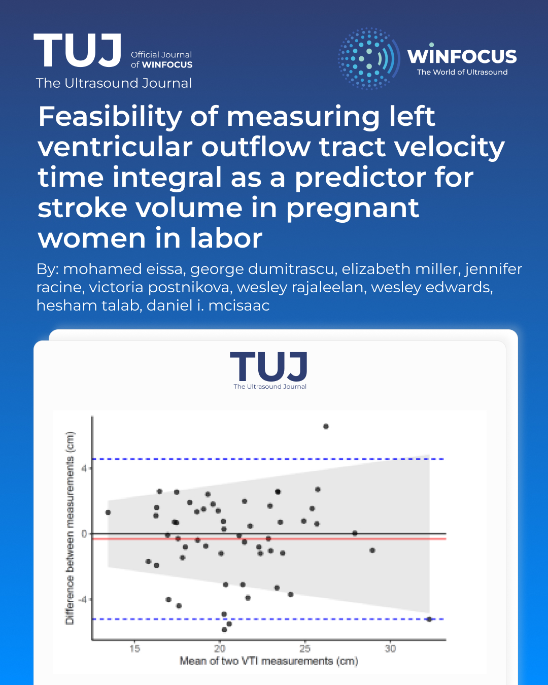

Feasibility of measuring left ventricular outflow tract velocity time integral as a predictor for stroke volume in pregnant women in labor
Keywords:
Echocardiography, POCUS, cardiac output, obstetricAbstract
Background: Pregnancy is a time of significant hemodynamic changes. Maintaining adequate cardiac output (CO) and uteroplacental perfusion is a priority in parturients, for favorable maternal-fetal outcomes. Blood pressure is commonly used as a surrogate for CO, although it may poorly correlate with stroke volume (SV) and CO in some cases. An alternative approach is SV estimation using transthoracic echocardiography (TTE) based on the velocity-time integral (VTI) of the left ventricular outflow tract (LVOT). Although VTI has been validated as a tool to estimate SV and CO in acute care contexts, its feasibility and utility in obstetric anesthesia remain unexplored. Therefore, the objective of this study is to evaluate the feasibility and reproducibility of LVOT VTI measurements in parturients during labor.
Methods: Following research ethics board approval, 55 full term pregnant female patients with a singleton pregnancy were recruited. TTE was used to calculate the LVOT VTI for each patient by the same anesthesiologist twice. Feasibility of obtaining the LVOT VTI was evaluated using time for image acquisition and the 3-Point Likert Scale for Imaging Quality. Intraclass correlation coefficients (ICC) were used to estimate intra-rater reliability.
Results: LVOT VTI was obtained for all participants on both attempts. Mean time needed to obtain measurements was 63.7 seconds (95%CI 56.5 to 70.8) on the 1st attempt and 44.2 seconds (95%CI 38.7 to 49.8) on the 2nd attempt. Eighty-one (73.6%) images were rated as optimal, 29 (26.3%) were rated as suboptimal. Intra-rater reliability was excellent (ICC was 0.94 (95%CI 0.92 to 0.95).
Conclusion: In singleton parturients, LVOT VTI measurements can be routinely obtained in a timely fashion with excellent intra-rater reliability during labor. These results support the feasibility of LVOT VTI to estimate and trend SV.
References
1. McNamara H, Barclay P, Sharma V. Accuracy and precision of the ultrasound cardiac output monitor (USCOM 1A) in pregnancy: Comparison with three-dimensional transthoracic echocardiography. British Journal of Anaesthesia. 2014;113(4):669-676. doi:10.1093/bja/aeu162
2. Curtis SL, Belham M, Bennett S, et al. Transthoracic Echocardiographic Assessment of the Heart in Pregnancy-a position statement on behalf of the British Society of Echocardiography and the United Kingdom Maternal Cardiology Society. Echo Res Pract. 2023;10(1):7. doi:10.1186/s44156-023-00019-8
3. Ramlakhan KP, Johnson MR, Roos-Hesselink JW. Pregnancy and cardiovascular disease. Nature Reviews Cardiology. 2020;17(11):718-731. doi:10.1038/s41569-020-0390-z
4. American College of Obstetricians and Gynecologists’ Presidential Task Force on Pregnancy and Heart Disease and Committee on Practice Bulletins—Obstetrics. ACOG Practice Bulletin No. 212: Pregnancy and Heart Disease. Obstet Gynecol. 2019;133(5):e320-e356. doi:10.1097/AOG.0000000000003243
5. Lavie A, Ram M, Lev S, et al. Maternal cardiovascular hemodynamics in normotensive versus preeclamptic pregnancies: A prospective longitudinal study using a noninvasive cardiac system (NICaSTM). BMC Pregnancy and Childbirth. 2018;18(1). doi:10.1186/s12884-018-1861-7
6. Vinayagam D, Patey O, Thilaganathan B, Khalil A. Cardiac output assessment in pregnancy: comparison of two automated monitors with echocardiography. Ultrasound in Obstetrics & Gynecology. 2017;49(1):32-38. doi:10.1002/uog.15915
7. Dyer RA, Piercy JL, Reed AR, Lombard CJ, Schoeman LK, James MF. Hemodynamic Changes Associated with Spinal Anesthesia for Cesarean Delivery in Severe Preeclampsia. Anesthesiology. 2008;108(5):802-811. doi:10.1097/01.anes.0000311153.84687.c7
8. Thilaganathan B, Kalafat E. Cardiovascular system in preeclampsia and beyond. Hypertension. 2019;73(3):522-531. doi:10.1161/HYPERTENSIONAHA.118.11191
9. Valensise H, Vasapollo B, Gagliardi G, Novelli GP. Early and late preeclampsia: two different maternal hemodynamic states in the latent phase of the disease. Hypertension. 2008;52(5):873-880. doi:10.1161/HYPERTENSIONAHA.108.117358
10. Orabona R, Sciatti E, Prefumo F, et al. Pre-eclampsia and heart failure: a close relationship. Ultrasound Obstet Gynecol. 2018;52(3):297-301. doi:10.1002/uog.18987
11. Dennis AT, Castro J, Carr C, Simmons S, Permezel M, Royse C. Haemodynamics in women with untreated pre-eclampsia. Anaesthesia. 2012;67(10):1105-1118. doi:10.1111/j.1365-2044.2012.07193.x
12. Xu Z, Song Y, Zhou Y, Tao Y, Shi X. Cardiac Hemodynamic Changes during Spinal Anesthesia for C-Section in Parturients with Twin Pregnancy. Vol 11.; 2018:2389-2397. www.ijcem.com/
13. Ackerman WE, Porembka DT, Juneja MM, Kaczorowski DM. Use of a pulmonary artery catheter in the management of the severe preeclamptic patient. Anesthesiol Rev. 1990;17(4):37-40.
14. Critchley LA, Lee A, Ho AMH. A critical review of the ability of continuous cardiac output monitors to measure trends in cardiac output. Anesth Analg. 2010;111(5):1180-1192. doi:10.1213/ANE.0b013e3181f08a5b
15. Dennis AT, Dyer RA. Cardiac output monitoring in obstetric anaesthesia. International Journal of Obstetric Anesthesia. 2014;23(1):1-3. doi:10.1016/j.ijoa.2013.11.001
16. Dennis A, Arhanghelschi I, Simmons S, Royse C. Prospective observational study of serial cardiac output by transthoracic echocardiography in healthy pregnant women undergoing elective caesarean delivery. Int J Obstet Anesth. 2010;19(2):142-148. doi:10.1016/j.ijoa.2009.06.007
17. Robson SC, Dunlop W, Moore M, Hunter S. Combined Doppler and echocardiographic measurement of cardiac output: theory and application in pregnancy. Br J Obstet Gynaecol. 1987;94(11):1014-1027. doi:10.1111/j.1471-0528.1987.tb02285.x
18. Cornette J, Laker S, Jeffery B, et al. Validation of maternal cardiac output assessed by transthoracic echocardiography against pulmonary artery catheterization in severely ill pregnant women: prospective comparative study and systematic review. Ultrasound in Obstetrics & Gynecology. 2017;49(1):25-31. doi:10.1002/uog.16015
19. Dennis AT. Transthoracic echocardiography in obstetric anaesthesia and obstetric critical illness. International Journal of Obstetric Anesthesia. 2011;20(2):160-168. doi:10.1016/j.ijoa.2010.11.007
20. Barber RL, Fletcher SN. A review of echocardiography in anaesthetic and peri-operative practice. Part 1: impact and utility. Anaesthesia. 2014;69(7):764-776. doi:10.1111/anae.12663
21. Sharma V, Fletcher SN. A review of echocardiography in anaesthetic and peri-operative practice. Part 2: training and accreditation. Anaesthesia. 2014;69(8):919-927. doi:10.1111/anae.12709
22. Maurizio Cecconi, Carlos Corredor, Nishkantha Arulkumaran, et al. Clinical review: Goal-directed therapy - what is the evidence in surgical patients? The effect on different risk groups. Critical Care. 2013;17:209.
23. Price S, Via G, Sloth E, et al. Echocardiography practice, training and accreditation in the intensive care: Document for the World Interactive Network Focused on Critical Ultrasound (WINFOCUS). Cardiovascular Ultrasound. 2008;6. doi:10.1186/1476-7120-6-49
24. Taton O, Fagnoul D, De Backer D, Vincent JL. Evaluation of cardiac output in intensive care using a non-invasive arterial pulse contour technique (Nexfin®) compared with echocardiography. Anaesthesia. 2013;68(9):917-923. doi:10.1111/anae.12341
25. Griffiths SE, Waight G, Dennis AT. Focused transthoracic echocardiography in obstetrics. BJA Educ. 2018;18(9):271-276. doi:10.1016/j.bjae.2018.06.001
26. Nedorf SM, Picard M D Facc Marco O Triulzi MH, Thomas JD, John Newell F, Etta Ing Facc Arthur E Wf MK, Man D Facc YM. METHODS New Perspectives In the Assessment of Cardiac Chamber Dimensions During Development and Adulthood. Vol 19.; 1992.
27. Muller L, Toumi M, Bousquet PJ, et al. An Increase in Aortic Blood Flow after an Infusion of 100 Ml Colloid over 1 Minute Can Predict Fluid Responsiveness The Mini-Fluid Challenge Study.; 2011.
28. Armstrong W, Ryan T. Hemodynamics. In: Armstrong W, Ryan T (Eds) Feigenbaum’s Echocardiography. Lippincott Williams & Wilkins, Philadelphia. 2010: 217–240.
29. Goldman JH, Schiller NB, Lim DC, Redberg RF, Foster E. Usefulness of stroke distance by echocardiography as a surrogate marker of cardiac output that is independent of gender and size in a normal population. American Journal of Cardiology. 2001;87(4):499-502. doi:10.1016/S0002-9149(00)01417-X
30. Cecconi M, De Backer D, Antonelli M, et al. Consensus on circulatory shock and hemodynamic monitoring. Task force of the European Society of Intensive Care Medicine. Intensive Care Med. 2014;40(12):1795-1815. doi:10.1007/s00134-014-3525-z
31. Parker CW, Kolimas AM, Kotini-Shah P. Velocity-Time Integral: A Bedside Echocardiography Technique Finding a Place in the Emergency Department. The Journal of Emergency Medicine. 2022;63(3):382-388. doi:10.1016/j.jemermed.2022.04.012
32. Millington SJ, Arntfield RT. Advanced Point-of-Care Cardiac Ultrasound Examination: Doppler Applications, Valvular Assessment, and Advanced Right Heart Examination. Global Heart. 2013;8(4):305-312. doi:https://doi.org/10.1016/j.gheart.2013.11.003
33. Shaikh F, Kenny JE, Awan O, et al. Measuring the accuracy of cardiac output using POCUS: the introduction of artificial intelligence into routine care. The Ultrasound Journal. 2022;14(1):47. doi:10.1186/s13089-022-00301-6
34. Yuriditsky E, Mitchell OJ, Sibley RA, et al. Low left ventricular outflow tract velocity time integral is associated with poor outcomes in acute pulmonary embolism. Vasc Med. 2020;25(2):133-140. doi:10.1177/1358863X19880268
35. Porter TR, Shillcutt SK, Adams MS, et al. Guidelines for the use of echocardiography as a monitor for therapeutic intervention in adults: a report from the American Society of Echocardiography. J Am Soc Echocardiogr. 2015;28(1):40-56. doi:10.1016/j.echo.2014.09.009
36. Blanco P, Aguiar FM, Blaivas M. Rapid ultrasound in shock (RUSH) velocity-time integral: A proposal to expand the RUSH protocol. Journal of Ultrasound in Medicine. 2015;34(9):1691-1700. doi:10.7863/ultra.15.14.08059
37. McLean AS. Echocardiography in shock management. Crit Care. 2016;20:275. doi:10.1186/s13054-016-1401-7
38. Tan C, Rubenson D, Srivastava A, et al. Left ventricular outflow tract velocity time integral outperforms ejection fraction and Doppler-derived cardiac output for predicting outcomes in a select advanced heart failure cohort. Cardiovascular Ultrasound. 2017;15(1):18. doi:10.1186/s12947-017-0109-4
39. Chinen D, Fujino M, Anzai T, et al. Left ventricular outflow tract velocity time integral correlates with low cardiac output syndrome in patients with acute decompensated heart failure. European Heart Journal. 2013;34(suppl_1):P4249. doi:10.1093/eurheartj/eht309.P4249
40. Jentzer JC, Tabi M, Wiley BM, Singam NSV, Anavekar NS. Echocardiographic Correlates of Mortality Among Cardiac Intensive Care Unit Patients With Cardiogenic Shock. Shock. 2022;57(3):336. doi:10.1097/SHK.0000000000001877
41. Levitov A, Marik PE. Echocardiographic assessment of preload responsiveness in critically Ill patients. Cardiology Research and Practice. 2012;1(1). doi:10.1155/2012/819696
42. Von Elm E, Altman DG, Egger M, Pocock SJ, Gøtzsche PC, Vandenbroucke JP. The Strengthening the Reporting of Observational Studies in Epidemiology (STROBE) statement: guidelines for reporting observational studies. Journal of Clinical Epidemiology. 2008;61(4):344-349. doi:10.1016/j.jclinepi.2007.11.008
43. Meineri M, Arellano R, Bryson G, et al. Canadian recommendations for training and performance in basic perioperative point-of-care ultrasound: recommendations from a consensus of Canadian anesthesiology academic centres. Canadian Journal of Anesthesia. 2021;68(3):376-386. doi:10.1007/s12630-020-01867-2
44. Blanco P. Rationale for using the velocity–time integral and the minute distance for assessing the stroke volume and cardiac output in point-of-care settings. Ultrasound Journal. 2020;12(1). doi:10.1186/s13089-020-00170-x
45. Harris P, Kuppurao L. Quantitative Doppler echocardiography. BJA Education. 2016;16(2):46-52. doi:10.1093/bjaceaccp/mkv015
46. Mcgregor D, Sharma S, Gupta S, Ahmad S, Godec T, Harris T. cardiac output study ( EDNICO ): a feasibility and repeatability study. Published online 2019:1-9.
47. Dinh VA, Ko HS, Rao R, et al. Measuring cardiac index with a focused cardiac ultrasound examination in the ED. American Journal of Emergency Medicine. 2012;30(9):1845-1851. doi:10.1016/j.ajem.2012.03.025
48. Bonett DG. Sample size requirements for estimating intraclass correlations with desired precision. Statistics in Medicine. 2002;21(9):1331-1335. doi:10.1002/sim.1108
49. Shrout PE, Fleiss JL. Intraclass correlations: uses in assessing rater reliability. Psychol Bull. 1979;86(2):420-428. doi:10.1037//0033-2909.86.2.420
50. Bland JM, Altman DG. Measuring agreement in method comparison studies. Statistical Methods in Medical Research. Published online April 1, 1999. doi:10.1177/096228029900800204
51. Michard F, Boussat S, Chemla D, et al. Relation between respiratory changes in arterial pulse pressure and fluid responsiveness in septic patients with acute circulatory failure. Am J Respir Crit Care Med. 2000;162(1):134-138. doi:10.1164/ajrccm.162.1.9903035
52. Zhang Y, Wang Y, Shi J, Hua Z, Xu J. Cardiac output measurements via echocardiography versus thermodilution: A systematic review and meta-analysis. PLoS One. 2019;14(10):e0222105. doi:10.1371/journal.pone.0222105
53. Betcher J, Majkrzak A, Cranford J, Kessler R, Theyyunni N, Huang R. Feasibility study of advanced focused cardiac measurements within the emergency department. Critical Ultrasound Journal. 2018;10(1). doi:10.1186/s13089-018-0093-4

Downloads
Published
Issue
Section
License
Copyright (c) 2026 Mohamed Eissa, George Dumitrascu, Elizabeth Miller, Jennifer Racine, Victoria Postnikova, Wesley Rajaleelan, Wesley Edwards, Hesham Talab, Daniel I McIsaac (Author)

This work is licensed under a Creative Commons Attribution-NonCommercial 4.0 International License.
This is an Open Access article distributed under the terms of the Creative Commons Attribution License (https://creativecommons.org/licenses/by-nc/4.0) which permits unrestricted use, distribution, and reproduction in any medium, provided the original work is properly cited.
Authors retain the copyright for their published work. No formal permission will be required to reproduce parts (tables or illustrations) of published papers, provided the source is quoted appropriately and reproduction has no commercial intent.
How to Cite